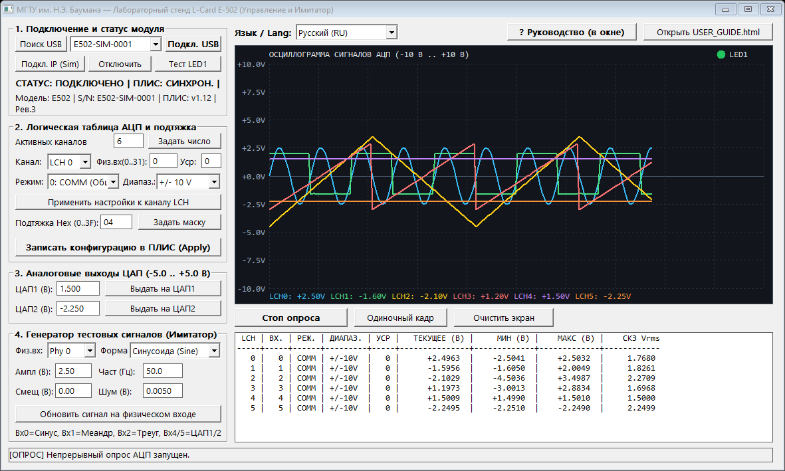
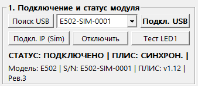
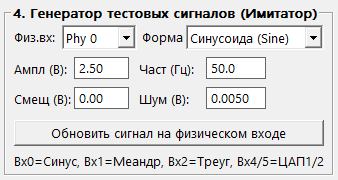
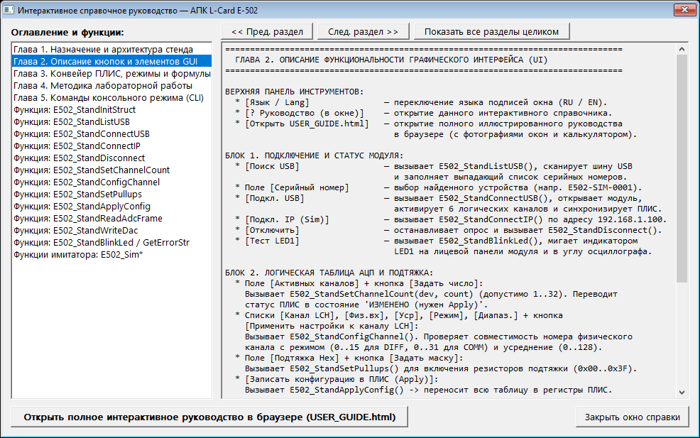
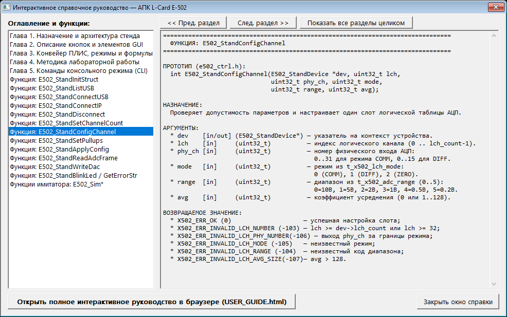

Глава 1. Назначение и программная архитектура лабораторного стенда
Программный комплекс предназначен для управления 16-разрядным модулем аналого-цифрового и цифро-аналогового ввода-вывода
L-Card E-502 в рамках учебных и исследовательских работ МГТУ им. Н.Э. Баумана.
Архитектура приложения разделена на три изолированных уровня, что позволяет выполнять лабораторные работы как на физическом стенде,
так и в режиме математической имитации сигналов без подключённого оборудования.
Модуль (файлы)
Уровень архитектуры
Назначение и решаемые задачи
e502_ctrl.h e502_ctrl.c
Безопасный уровень управления оборудованием (Hardware Abstraction Layer)
Инкапсулирует контекст устройства E502_StandDevice, защищает от утечек дескрипторов t_x502_hnd,
контролирует границы логической таблицы АЦП (1..32), совместимость физических входов (0..15 для DIFF,
0..31 для COMM), коэффициентов усреднения (0..128), масок подтяжки (0x00..0x3F)
и диапазона ЦАП (-5.0..+5.0 В).
e502_sim.h e502_sim.c
Математический имитатор физического тракта и API драйвера (x502api / e502api)
Эмулирует 32 физических входа АЦП, 2 канала ЦАП, регистры ПЛИС (FPGA), дифференциальное вычитание
$U_{\text{DIFF}}(k) = U_{\text{phy}}(k) - U_{\text{phy}}(k+16)$, аппаратное усреднение шума в $\sqrt{\text{Avg}}$ раз,
ограничение по выбранному поддиапазону АЦП и обратную связь с ЦАП1/ЦАП2.
main_gui.c main_cli.c test_stand.c
Прикладной уровень (Win32 GUI, интерактивный CLI и модульные автотесты)
Графическое рабочее место оператора (stand_gui.exe), защищённая командная оболочка (stand_cli.exe)
и набор автоматизированных интеграционных проверок (test_stand.exe).
Структура контекста устройства E502_StandDevice
Все пользовательские функции модуля e502_ctrl.h принимают указатель на структуру состояния E502_StandDevice.
Прямая модификация полей структуры запрещена — изменение конфигурации выполняется исключительно через функции API, которые автоматически
выставляют флаг рассинхронизации с ПЛИС config_dirty = true.
typedef struct {
uint32_t init_magic; /* Маркер инициализации E502_STAND_MAGIC (0x45353032U) */
t_x502_hnd hnd; /* Дескриптор открытого модуля из библиотеки x502api */
bool is_connected; /* Признак активного соединения USB или Ethernet */
bool config_dirty; /* true, если настройки изменены, но не записаны в ПЛИС*/
t_x502_info dev_info; /* Серийный номер, версия ПЛИС, ревизия платы */
uint32_t lch_count; /* Активное число логических каналов (1..32) */
E502_ChannelCfg lch_cfg[STAND_MAX_CHANNELS]; /* Локальная таблица настроек 32 логических каналов */
uint32_t pullups_mask; /* Битовая маска резисторов подтяжки DI (0x00..0x3F) */
int32_t last_error; /* Код последней ошибки драйвера (X502_ERR_*) */
} E502_StandDevice;
Глава 2. Описание функциональности графического интерфейса (UI, окна и кнопки)
Графическая оболочка stand_gui.exe построена по строгому приборному принципу: левая колонка содержит четыре
функциональных блока управления в порядке технологического маршрута настройки модуля, а правая часть отведена под цифровой осциллограф
реального времени и сводную измерительную таблицу.

Рис. 2.1. Общий вид главного окна stand_gui.exe при одновременном опросе 6 логических каналов АЦП (20 Гц)
Интерактивный разбор панелей, кнопок и полей ввода
Выберите интересующий функциональный блок ниже, чтобы увидеть его увеличенный снимок и таблицу назначения каждой кнопки:

Рис. 2.2. Блок 1 — Управление соединением
Назначение элементов Блока 1 («1. Подключение и статус модуля»)
Проверяет корректность комбинации параметров (включая ограничение phy_ch < 16 для режима DIFF и avg ≤ 128) и сохраняет их в теневую структуру lch_cfg[lch].
Немедленно выставляет напряжение на 2-м канале ЦАП. В режиме имитации выходы ЦАП1 и ЦАП2 заведены петлёй обратной связи на физические входы Phy 4 и Phy 5.

Рис. 2.5. Блок 4 — Генератор искусственных сигналов
Назначение элементов Блока 4 («4. Генератор тестовых сигналов (Имитатор)»)
Отображает для каждого активного логического канала мгновенное напряжение, экстремумы и среднеквадратическое значение $V_{\text{rms}} = \sqrt{\frac{1}{N}\sum_{k=1}^{N} u_k^2}$.
Рис. 2.7. Верхняя панель инструментов главного окна

Рис. 2.8. Встроенное интерактивное справочное окно с оглавлением глав и функций

Рис. 2.9. Отображение карточки функции и её аргументов во встроенном справочнике приложения
Глава 3. Интерактивный справочник пользовательских функций (полное описание аргументов)
Ниже приведено исчерпывающее описание всех 20 пользовательских функций программного комплекса:
13 функций основного модуля управления стендом (e502_ctrl.h) и 7 функций модуля имитации и тестирования (e502_sim.h).
Используйте строку поиска или кнопки фильтрации для быстрого отбора функций, а также нажимайте на заголовок любой карточки для сворачивания/разворачивания.
Назначение: Выполняет начальную безопасную инициализацию структуры контекста устройства E502_StandDevice. Если переданная структура уже была инициализирована ранее (поле init_magic == E502_STAND_MAGIC) и содержит активный дескриптор hnd != NULL, функция автоматически вызывает E502_StandDisconnect(dev) для предотвращения утечки дескриптора перед обнулением памяти.
void E502_StandInitStruct(E502_StandDevice *dev);
Аргумент
Тип
Направление
Допустимые значения
Описание аргумента
dev
E502_StandDevice *
[in/out]
Ненулевой указатель (при NULL функция безопасно завершается без действий)
Указатель на пользовательскую структуру состояния стенда. После вызова заполняется настройками по умолчанию: lch_count = 4, каналы 0..31 переводятся в режим COMM на диапазон ±10 В, маска подтяжки pullups_mask = 0x04 (DI_SYN1), config_dirty = true.
Возвращаемое значение: Отсутствует (void). Поле dev->last_error устанавливается в X502_ERR_OK (0).
2. int E502_StandListUSB(char serials[][X502_SERIAL_SIZE], uint32_t max_count, uint32_t *found_count)e502_ctrl.h
Назначение: Сканирует шину USB и запрашивает у драйвера список серийных номеров всех доступных к открытию модулей L-Card E-502.
int E502_StandListUSB(char serials[][X502_SERIAL_SIZE], uint32_t max_count, uint32_t *found_count);
Аргумент
Тип
Направление
Допустимые значения
Описание аргумента
serials
char [][32]
[out]
Массив минимум из max_count строк по X502_SERIAL_SIZE (32) байт (не NULL)
Выходной двумерный символьный буфер, в который записываются нуль-терминированные строки серийных номеров обнаруженных модулей.
max_count
uint32_t
[in]
≥ 1 (при 0 функция сразу возвращает X502_ERR_OK)
Максимальное число серийных номеров, которое может вместить массив serials.
found_count
uint32_t *
[out]
Указатель на uint32_t или NULL
Если указатель не равен NULL, в него записывается общее число найденных на шине USB модулей E-502.
Возвращаемое значение:X502_ERR_OK (0) при успешном опросе шины; X502_ERR_INVALID_PARAMETER (-9) если serials == NULL при max_count > 0; отрицательный код ошибки при сбое USB-драйвера. Внутренний вызов: E502_UsbGetSerialList().
3. int E502_StandConnectUSB(E502_StandDevice *dev, const char *serial)e502_ctrl.h
Назначение: Создаёт дескриптор t_x502_hnd, открывает соединение с модулем E-502 по интерфейсу USB 2.0 и считывает паспортную информацию об устройстве (модель, серийный номер, версию ПЛИС, ревизию платы).
int E502_StandConnectUSB(E502_StandDevice *dev, const char *serial);
Аргумент
Тип
Направление
Допустимые значения
Описание аргумента
dev
E502_StandDevice *
[in/out]
Ненулевой указатель на структуру устройства
Контекст устройства. Если до вызова уже существовало открытое соединение, функция автоматически закрывает его через E502_StandDisconnect(dev).
serial
const char *
[in]
Строка серийного номера, "" (пустая строка) или NULL
Серийный номер целевого прибора. Если передан NULL или пустая строка "", функция автоматически вызывает E502_UsbGetSerialList и подключается к первому найденному на шине USB модулю.
Возвращаемое значение:X502_ERR_OK (0) — успешное подключение; X502_ERR_DEVICE_NOT_FOUND (-3) — ни один модуль USB не обнаружен; X502_ERR_MEMORY_ALLOC (-2) — ошибка выделения дескриптора X502_Create(). При частичном сбое дескриптор гарантированно освобождается. Внутренние вызовы: X502_Create(), E502_OpenUsb(), X502_GetDevInfo().
4. int E502_StandConnectIP(E502_StandDevice *dev, uint32_t ip_addr, uint32_t timeout_ms)e502_ctrl.h
Назначение: Создаёт дескриптор t_x502_hnd и устанавливает сетевое соединение с модулем E-502 по интерфейсу Ethernet (TCP/IP) с заданным IPv4-адресом и временем ожидания ответа.
int E502_StandConnectIP(E502_StandDevice *dev, uint32_t ip_addr, uint32_t timeout_ms);
Аргумент
Тип
Направление
Допустимые значения
Описание аргумента
dev
E502_StandDevice *
[in/out]
Ненулевой указатель на структуру устройства
Контекст устройства. При наличии старого подключения оно предварительно закрывается.
ip_addr
uint32_t
[in]
32-битный IPv4-адрес в хост-порядке байт (не 0)
Сетевой адрес прибора: старший байт — первый октет. Например, для 192.168.1.100 значение формируется как (192U<<24)|(168U<<16)|(1U<<8)|100U = 0xC0A80164.
timeout_ms
uint32_t
[in]
Рекомендуется 500 .. 5000 мс
Максимальное время ожидания установки TCP-соединения в миллисекундах.
Возвращаемое значение:X502_ERR_OK (0) — успешное подключение; X502_ERR_INVALID_PARAMETER (-9) — если dev == NULL; отрицательный код ошибки при недоступности узла. Внутренние вызовы: X502_Create(), E502_OpenByIpAddr(), X502_GetDevInfo().
5. int E502_StandDisconnect(E502_StandDevice *dev)e502_ctrl.h
Назначение: Корректно закрывает канал связи с модулем E-502, освобождает системный дескриптор t_x502_hnd и сбрасывает флаг is_connected = false. Функция идемпотентна — повторный вызов для уже отключённого устройства безопасен.
int E502_StandDisconnect(E502_StandDevice *dev);
Аргумент
Тип
Направление
Допустимые значения
Описание аргумента
dev
E502_StandDevice *
[in/out]
Ненулевой указатель на структуру устройства
Контекст устройства. После вызова dev->hnd = NULL, dev->is_connected = false.
Возвращаемое значение:X502_ERR_OK (0) при успешном освобождении ресурсов; X502_ERR_INVALID_PARAMETER (-9) при dev == NULL. Внутренние вызовы: X502_Close(), X502_Free().
6. int E502_StandSetChannelCount(E502_StandDevice *dev, uint32_t count)e502_ctrl.h
Назначение: Задаёт количество активных логических каналов в таблице опроса АЦП и помечает конфигурацию как требующую синхронизации с ПЛИС (config_dirty = true).
int E502_StandSetChannelCount(E502_StandDevice *dev, uint32_t count);
Аргумент
Тип
Направление
Допустимые значения
Описание аргумента
dev
E502_StandDevice *
[in/out]
Ненулевой указатель на структуру устройства
Контекст устройства, в котором обновляется поле lch_count.
count
uint32_t
[in]
1 ≤ count ≤ 32 (STAND_MAX_CHANNELS)
Количество опрашиваемых за один кадр логических каналов АЦП. Значения 0 или > 32 отклоняются без изменения состояния.
Возвращаемое значение:X502_ERR_OK (0) — число каналов принято; X502_ERR_INVALID_LCH_COUNT (-102) — если count == 0 или count > 32.
Назначение: Выполняет полную валидацию параметров и настраивает один слот логической таблицы АЦП dev->lch_cfg[lch]. Устанавливает dev->config_dirty = true.
Код коэффициента усиления входного программируемого усилителя (PGA) из перечисления t_x502_adc_range.
avg
uint32_t
[in]
0 (по умолчанию = 1) или 1 .. 128
Коэффициент аппаратного усреднения отсчётов в ПЛИС. Снижает СКО случайного шума в $\sqrt{\text{avg}}$ раз.
Возвращаемое значение:X502_ERR_OK (0) — успешно;
X502_ERR_INVALID_LCH_NUMBER (-103) — выход индекса lch за пределы lch_count;
X502_ERR_INVALID_LCH_MODE (-105) — неизвестный код режима;
X502_ERR_INVALID_LCH_PHY_NUMBER (-106) — phy_ch ≥ 16 в режиме DIFF или ≥ 32 в режиме COMM;
X502_ERR_INVALID_LCH_RANGE (-104) — код диапазона вне 0..5;
X502_ERR_INVALID_LCH_AVG_SIZE (-107) — avg > 128.
8. int E502_StandSetPullups(E502_StandDevice *dev, uint32_t pullups_mask)e502_ctrl.h
Возвращаемое значение:X502_ERR_OK (0) — маска принята; X502_ERR_INVALID_PARAMETER (-9) — если установлены зарезервированные биты ((pullups_mask & ~0x3FU) != 0).
9. int E502_StandApplyConfig(E502_StandDevice *dev)e502_ctrl.h
Назначение: Выполняет полную транзакционную загрузку локальных настроек стенда в аппаратные регистры ПЛИС (FPGA) модуля E-502 строго в порядке, регламентированном руководством программиста L-Card.
int E502_StandApplyConfig(E502_StandDevice *dev);
Аргумент
Тип
Направление
Допустимые значения
Описание аргумента
dev
E502_StandDevice *
[in/out]
Указатель на открытое устройство (is_connected == true, hnd != NULL)
Контекст устройства. При успешном завершении транзакции сбрасывает dev->config_dirty = false.
Последовательность внутренних вызовов SDK:
1) X502_SetMode(hnd, X502_MODE_FPGA) →
2) X502_SetLChannelCount(hnd, lch_count) →
3) цикл X502_SetLChannel(hnd, i, phy_ch, mode, range, avg) для i = 0 .. lch_count - 1 →
4) X502_SetDigInPullup(hnd, pullups_mask) →
5) X502_Configure(hnd, 0).
Возвращаемое значение:X502_ERR_OK (0) — ПЛИС успешно сконфигурирована; X502_ERR_NOT_OPENED (-4) — устройство не подключено; иначе код ошибки первого сбойного вызова SDK.
10. int E502_StandReadAdcFrame(E502_StandDevice *dev, double *volts_buf, uint32_t timeout_ms)e502_ctrl.h
Назначение: Считывает один полный синхронный кадр отсчётов АЦП по всем активным логическим каналам с применением заводских калибровочных коэффициентов и переводом в Вольты. Если перед чтением обнаружен флаг dev->config_dirty == true, функция автоматически вызывает E502_StandApplyConfig(dev).
int E502_StandReadAdcFrame(E502_StandDevice *dev, double *volts_buf, uint32_t timeout_ms);
Аргумент
Тип
Направление
Допустимые значения
Описание аргумента
dev
E502_StandDevice *
[in/out]
Указатель на подключённое устройство
Контекст устройства.
volts_buf
double *
[out]
Массив размером не менее dev->lch_count элементов double (не NULL)
Выходной буфер, в который записываются измеренные напряжения в Вольтах для каналов 0 .. lch_count - 1.
timeout_ms
uint32_t
[in]
Рекомендуется 100 .. 1000 мс
Таймаут ожидания готовности кадра АЦП в миллисекундах.
Возвращаемое значение:X502_ERR_OK (0) — кадр успешно считан; X502_ERR_NOT_OPENED (-4) — нет соединения; X502_ERR_INVALID_PARAMETER (-9) — если volts_buf == NULL. Внутренний вызов: X502_AsyncGetAdcFrame(hnd, X502_PROC_FLAGS_VOLT, timeout_ms, volts_buf).
11. int E502_StandWriteDac(E502_StandDevice *dev, uint32_t channel, double volts)e502_ctrl.h
Назначение: Проверяет корректность номера канала и диапазона напряжения, после чего немедленно выполняет асинхронную выдачу постоянного напряжения на аналоговый выход ЦАП1 или ЦАП2.
int E502_StandWriteDac(E502_StandDevice *dev, uint32_t channel, double volts);
Аргумент
Тип
Направление
Допустимые значения
Описание аргумента
dev
E502_StandDevice *
[in/out]
Указатель на подключённое устройство
Контекст устройства.
channel
uint32_t
[in]
0 (X502_DAC_CH1) или 1 (X502_DAC_CH2)
Номер выходного канала ЦАП.
volts
double
[in]
Конечное вещественное число -5.0 ≤ volts ≤ +5.0 В
Устанавливаемое выходное напряжение в Вольтах. Значения NaN, ±Inf, а также значения за пределами ±5.000 В блокируются до обращения к драйверу.
Возвращаемое значение:X502_ERR_OK (0) — напряжение выдано на выход; X502_ERR_INVALID_DAC_CHANNEL (-109) — неверный канал; X502_ERR_INVALID_PARAMETER (-9) — выход напряжения за пределы [-5.0; +5.0] В; X502_ERR_NOT_OPENED (-4) — прибор не открыт. Внутренний вызов: X502_AsyncOutDac(hnd, channel, volts, X502_DAC_FLAGS_VOLT | X502_DAC_FLAGS_CALIBR).
12. int E502_StandBlinkLed(E502_StandDevice *dev)e502_ctrl.h
Назначение: Выполняет аппаратную визуальную идентификацию подключённого модуля путём переключения состояния светодиода LED1 на лицевой панели прибора.
int E502_StandBlinkLed(E502_StandDevice *dev);
Аргумент
Тип
Направление
Допустимые значения
Описание аргумента
dev
E502_StandDevice *
[in/out]
Указатель на подключённое устройство
Контекст устройства.
Возвращаемое значение:X502_ERR_OK (0) — команда выполнена; X502_ERR_NOT_OPENED (-4) — устройство не открыто. Внутренний вызов: X502_LedBlink(hnd).
Назначение: Управление внутренними модельными часами имитатора. При каждом чтении кадра АЦП время автоматически сдвигается на 2 мс, однако функция E502_SimStepTime позволяет детерминированно смещать фазу сигналов в тестах.
Принудительно заставляет следующий вызов X502_Configure() завершиться с указанным кодом ошибки, позволяя проверить очистку дескрипторов при частичном сбое инициализации.
Возврат E502_SimGetStats()
E502_SimStats
[out]
Структура счётчиков
Возвращает число активных дескрипторов (active_handles), открытых соединений (open_connections), вызовов X502_Configure, чтений АЦП, записей ЦАП и миганий светодиода.
Глава 4. Интерактивный тренажёр вызовов API и калькулятор тракта АЦП
Используйте приведённый ниже интерактивный тренажёр, чтобы проверить, как функции E502_StandConfigChannel() и
E502_StandWriteDac() валидируют переданные аргументы, какой код возврата X502_ERR_* формируется,
и как аппаратное усреднение в ПЛИС влияет на шаг квантования и среднеквадратическое отклонение шума.
Тренажёр проверки аргументов E502_StandConfigChannel и E502_StandWriteDac
int err1 = E502_StandSetChannelCount(&dev, 6);
int err2 = E502_StandConfigChannel(&dev, 0, 0, 0, 0, 16);
int err3 = E502_StandWriteDac(&dev, X502_DAC_CH1, 1.500);
Ниже приведён типовой сценарий выполнения лабораторного практикума (6 упражнений) с использованием графического рабочего места
stand_gui.exe.
Упражнение 1. Подключение к модулю и проверка канала связи
В Блоке 1 нажмите кнопку [Поиск USB] и убедитесь, что в списке появился серийный номер E502-SIM-0001 (или номер реального модуля).
Нажмите [Подкл. USB]. Проверьте, что строка состояния сменилась на СТАТУС: ПОДКЛЮЧЕНО | ПЛИС: СИНХРОН., а в поле паспорта отобразились версия ПЛИС v1.12 и ревизия платы Рев.3.
Нажмите кнопку [Тест LED1] и зафиксируйте вспышку индикатора LED1 в правом верхнем углу экрана осциллографа.
Упражнение 2. Наблюдение многоканальных сигналов в режиме с общей землёй (COMM)
В Блоке 2 установите число активных каналов 6, нажмите [Задать число] и затем [Записать конфигурацию в ПЛИС (Apply)].
Под экраном осциллографа нажмите [Старт опроса (20 Гц)].
В сводной таблице снимите показания МИН, МАКС и СКЗ Vrms для первых четырёх каналов:
LCH 0 (синусоида 2.5 В, теоретическое $V_{\text{rms}} = 2.5 / \sqrt{2} \approx 1.7678\text{ В}$),
LCH 1 (меандр от $-1.6$ до $+2.0$ В),
LCH 2 (треугольник),
LCH 3 (пила).
Упражнение 3. Проверка петли обратной связи ЦАП → АЦП (Loopback)
В Блоке 3 введите в поле ЦАП1 (В) значение +3.250 и нажмите [Выдать на ЦАП1].
В поле ЦАП2 (В) введите -4.100 и нажмите [Выдать на ЦАП2].
В таблице измерений проверьте показания каналов LCH 4 (физический вход 4, подключённый к ЦАП1) и LCH 5 (физический вход 5, подключённый к ЦАП2).
Попробуйте ввести заведомо недопустимое напряжение 6.500 В и убедитесь, что защита возвращает ошибку X502_ERR_INVALID_PARAMETER.
Упражнение 4. Подавление шума за счёт аппаратного усреднения в ПЛИС
В Блоке 4 выберите Phy 4 (петля с ЦАП1), установите Шум (В) = 0.2500 и нажмите [Обновить сигнал на физическом входе]. Зафиксируйте размах колебаний на канале LCH 4 при Уср = 0.
В Блоке 2 выберите LCH 4, введите Уср = 64, нажмите [Применить настройки к каналу LCH] и затем [Записать конфигурацию в ПЛИС (Apply)].
Нажмите [Очистить экран] и убедитесь, что размах шумовой дорожки уменьшился в $\sqrt{64} = 8$ раз.
Упражнение 5. Исследование дифференциального режима измерения (DIFF)
В Блоке 4 выберите Phy 0 и задайте постоянное напряжение (DC) со смещением +3.50 В.
Выберите Phy 16 (инверсный вход дифференциальной пары для канала 0) и задайте постоянное напряжение (DC) со смещением +1.25 В.
В Блоке 2 для LCH 0 выберите Физ.вх = 0, режим 1: DIFF (Дифференц.), нажмите [Применить настройки к каналу LCH] и [Записать конфигурацию в ПЛИС (Apply)].
Убедитесь, что измеренное напряжение на LCH 0 строго равно разности $3.50 - 1.25 = +2.2500\text{ В}$.
Глава 6. Консольный режим (CLI), ключи запуска и автоматическое тестирование
Помимо графического интерфейса, программный комплекс включает консольную утилиту stand_cli.exe для пакетного
управления и тестовый набор test_stand.exe.
Справочник команд интерактивной консоли stand_cli.exe
Команда CLI
Вызываемая функция C API
Описание и пример использования
scan
E502_StandListUSB
Выводит список серийных номеров всех модулей E-502 на шине USB.
open [serial]
E502_StandConnectUSB
Открывает первый найденный модуль или прибор с указанным серийным номером.
open_ip <ip>
E502_StandConnectIP
Подключается к модулю по IPv4-адресу: open_ip 192.168.1.100.
close
E502_StandDisconnect
Закрывает текущее соединение и освобождает дескриптор.
status
Чтение E502_StandDevice
Печатает паспорт прибора, статус синхронизации ПЛИС и таблицу активных каналов.